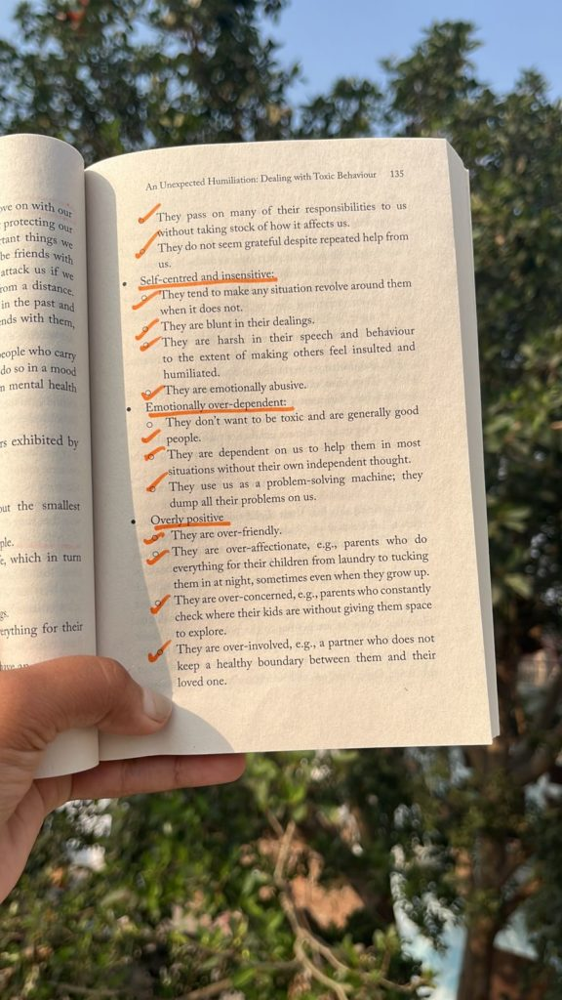

Gaur Gopal Das is a renowned Indian spiritual leader and motivational speaker who has inspired millions with his wisdom and humor. A former engineer, he chose the path of spirituality and became a monk with the International Society for Krishna Consciousness (ISKCON).
He is known for his engaging talks and relatable life lessons, Gaur Gopal Das combines ancient Vedic philosophy with modern practical advice, making spirituality accessible to people of all ages. His books, lectures, and social media presence have made him a beloved figure, offering guidance on personal growth, relationships, and finding inner peace.
Gaur Gopal Das, born on December 24, 1973, in Maharashtra, India, grew up with a strong interest in spirituality. He studied Electrical Engineering at the College of Engineering Pune (COEP). After a brief stint in the corporate world, he felt a deeper calling and left his job to focus on spiritual practice. Now a motivational speaker and life coach, he combines his technical background with profound spiritual insights to inspire and guide others.
